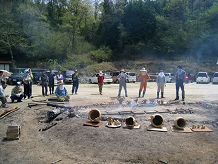
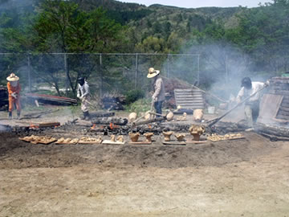

最高の縄文野焼き日和の一日でした！
第１４回春の縄文野焼き祭りが、連休初日の４月２９日に、澄み切った青空のもと開催されました。
|  |  |
芽吹いたばかりのやわらかな新緑の中、春の暖かい太陽の日差しに包まれて、絶好の野焼き日和です。
野焼きされる約１００点の作品も、日差しのぬくもりと燃える炎に、気持ちよさそうにあぶられじっくりと
温度を上げていきます。
早朝から野焼きの準備をして、火を焚き続ける法曽焼同好会員や陶芸教室会員スタッフにとっては、
いつもながらの炎まみれ汗まみれの奮闘となり、無事焼き上がるよう気持ちを込めた必死の作業です。
慎重なあぶり焼きから徐々に火を強めていって午後３時頃、炎は最高潮に。
やがて炎が次第に小さくなって焼き上がった作品が姿を見せ始める時の感動！
燻しのための煙があたりをゆらめいて、劇的な一日の余韻を漂わせています。
当日は縄文好きな方々が、遠く新潟や愛知・京都・大阪・愛媛・広島そして県内各地からも多数参加者が
あり、裾野の広がりを実感できました。
=∴=∵=∴=∵=∴=∵=∴=∵=∴=∵=∴=∵=∴=∵=∴=∵=∴=∵=∴=∵=∴=∵=∴=∵=∴=∵=∴=
〈体験コーナーでは〉
縄文粘土で夢中になって土偶や器を作ったり。
初めてでも縄をころがして縄文を入れると、気分はみんな縄文人になる不思議。
まが玉つくりも子供たちに大人気。
やわらかい石をひたすら紙ヤスリでこすって、好みのまが玉ペンダント。
首にかければ、こちらも気分は縄文人！
昨年に引き続いて行なっている東日本大震災への思いや気持ちを込めた「いのりの土偶づくり」への参加
もあり、御協力有り難うございました。
〈土器で煮炊き体験〉
２つの土器を使いたかきびの団子汁をつくり、参加者全員で味わいました。
初めてたかきび団子を食べた方も美味しいとの声。
野性味あふれる土器料理として、例年の猪汁と共にメニューに加えたいです。
法曽焼同好会の婦人たちによる〈法曽特製カレー〉の販売も！
これは新見特産の千屋牛と筍入りの特製カレー。
美味しくてお腹いっぱいになる、野焼きスタミナ満杯の逸品でした。
美術館と済渡寺をつなぐ〈野辺の地蔵さまロード〉の６番目の石の祠が美術館の下のポスト横にできました。
当日は開会式が終わってすぐ、野焼き祭り参加者の皆さんにもお願いして、出番を待っていた３３体を祠に納めてきました。
今回は趣旨に賛同して作ってくださった思誠小学校の親子の思いのこもったにぎり地蔵です。
野の地蔵さまたちも気持ちよさそうです。
| 【第１４回「春の縄文野焼き祭り」チラシ】 →（表面）PDF版を開く →（裏面）PDF版を開く |